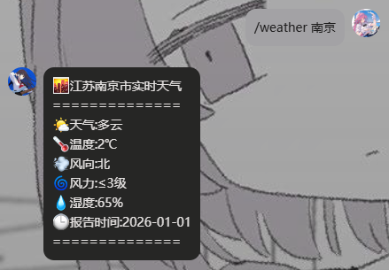
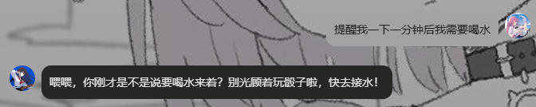
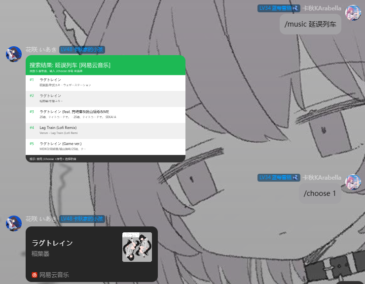
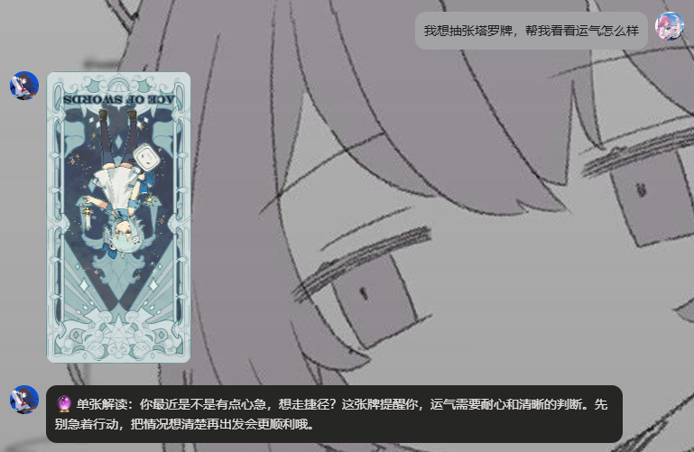

欢迎来到Hanasaki帮助手册
此页面用于记录Hanasaki的各种指令化功能
左侧为手册目录，找到需要查询的部分进入查看即可
左侧为手册目录，找到需要查询的部分进入查看即可
天气查询功能
## 使用方法:
命令列表：
```
/weather [city] #查询指定城市的实时天气信息
/weather [city] [date] #查询指定城市某日的天气预报
```
示例见后附图片
注⚠️:
* city值填写顺序为“国家、省份、城市、区县”，一般情况下只输入某某市或某某区即可，遇到重名城市加上某某省即可
* 日期的格式为YYYY-MM-DD,例如2025-11-22
* 支持查看最多三日后的天气信息，例如在2025-11-22，最多可以查询到2025-11-25日的天气预报
* 字段city仅支持中文名
命令列表：
```
/weather [city] #查询指定城市的实时天气信息
/weather [city] [date] #查询指定城市某日的天气预报
```
示例见后附图片
注⚠️:
* city值填写顺序为“国家、省份、城市、区县”，一般情况下只输入某某市或某某区即可，遇到重名城市加上某某省即可
* 日期
* 支持查看最多三日后的天气信息，例如在2025-11-22，最多可以查询到2025-11-25日的天气预报
* 字段city仅支持中文名

WeatherExample.png
群投票禁言
本功能需要Hanasaki在群聊中拥有管理员或更高权限
✍️ 使用方法
1. 发起投票禁言
在群聊中发送以下命令来发起一个投票，用于禁言某个群成员：
/投票禁言 @目标QQ号 [时长]`
@目标QQ号`**: 必须，指定要禁言的用户 QQ 号。
[时长]: 可选，禁言的分钟数，不填则默认为 1 分钟。
**示例:**
/投票禁言 @12345678 (默认禁言 1 分钟)
/投票禁言 @12345678 5 (禁言 5 分钟)
2. 参与投票
当投票发起后，群成员可以通过在投票消息上添加以下表情来表示自己的意见：
* **按钮**: 同意禁言
* **❓**: 反对禁言
3. 结果公布
投票时间（默认 60 秒）结束后，插件会自动统计 按钮 和 ❓ 的票数。
* 如果 按钮 票数多于 ❓，则投票通过，目标用户将被禁言。
* 如果 按钮 票数不大于 ❓，则投票不通过，目标用户不受影响。
4. 获取帮助
/vote help
发送此命令可以查看投票禁言功能的详细使用说明。
✍️ 使用方法
1. 发起投票禁言
在群聊中发送以下命令来发起一个投票，用于禁言某个群成员：
/投票禁言 @目标QQ号 [时长]`
@目标QQ号`**: 必须，指定要禁言的用户 QQ 号。
[时长]: 可选，禁言的分钟数，不填则默认为 1 分钟。
**示例:**
/投票禁言 @12345678 (默认禁言 1 分钟)
/投票禁言 @12345678 5 (禁言 5 分钟)
2. 参与投票
当投票发起后，群成员可以通过在投票消息上添加以下表情来表示自己的意见：
* **按钮**: 同意禁言
* **❓**: 反对禁言
3. 结果公布
投票时间（默认 60 秒）结束后，插件会自动统计 按钮 和 ❓ 的票数。
* 如果 按钮 票数多于 ❓，则投票通过，目标用户将被禁言。
* 如果 按钮 票数不大于 ❓，则投票不通过，目标用户不受影响。
4. 获取帮助
/vote help
发送此命令可以查看投票禁言功能的详细使用说明。
骰子功能
"我的天哪，这一个小的要命的功能居然需要我单独拉出来一个页面进行介绍"
🎲 **骰子命令帮助**
**检定掷骰:**
`/dice check <检定ID>` - 执行指定检定的掷骰
**普通掷骰:**
`/dice D<面数> [数量]` - 掷指定面数的骰子
示例:
`/dice D20` - 掷一个20面骰
`/dice D6 3` - 掷三个6面骰并计算总和
**支持的骰子:**
- D4, D6, D8, D10, D12, D20, D100
- 面数范围: 2-1000
- 数量范围: 1-10
**注意:** 检定掷骰需要先使用 `/check` 命令创建检定
**检定掷骰:**
`/dice check <检定ID>` - 执行指定检定的掷骰
**普通掷骰:**
`/dice D<面数> [数量]` - 掷指定面数的骰子
示例:
`/dice D20` - 掷一个20面骰
`/dice D6 3` - 掷三个6面骰并计算总和
**支持的骰子:**
- D4, D6, D8, D10, D12, D20, D100
- 面数范围: 2-1000
- 数量范围: 1-10
**注意:** 检定掷骰需要先使用 `/check` 命令创建检定
智能提醒功能
在私聊或群聊中对 Bot 发送包含关键词的消息。
触发关键词：`提醒`、`叫我`、`记得`、`别忘了`
### 示例
相对时间：
"10分钟后**提醒**我关火"
绝对时间：
"明天早上8点**叫我**起床"
模糊时间（依赖当前语境）：
**别忘了**晚上10点提醒我抢票"
*注意：如果未指定具体时间，Hanasaki 会提示你补充时间信息。*
群聊提醒示例
当提醒在群聊中触发时，Hanasaki会自动@设置提醒的用户：
触发关键词：`提醒`、`叫我`、`记得`、`别忘了`
### 示例
相对时间：
"10分钟后**提醒**我关火"
绝对时间：
"明天早上8点**叫我**起床"
模糊时间（依赖当前语境）：
**别忘了**晚上10点提醒我抢票"
*注意：如果未指定具体时间，Hanasaki 会提示你补充时间信息。*
群聊提醒示例
当提醒在群聊中触发时，Hanasaki会自动@设置提醒的用户：

ReminderExample.png
海龟汤游戏功能
基本命令
命令说明
/hgt 问题 | 生成一个新的AI海龟汤题目，开始游戏。 |
/hgt 问题 [你的问题] | 向AI提问关于当前题目的问题。 |
/hgt 提示 | 获取一个关于当前题目的提示（最多3次）。 |
/hgt 整理线索 | 获取当前题目的关键线索整理。 |
/hgt 猜谜 [你的答案] | 尝试猜测当前题目的汤底（答案）。 |
/hgt 揭秘 | 直接揭晓当前题目的汤底，并结束游戏。 |
/hgt 退出 | 退出当前正在进行的游戏
/hgt 帮助 | 查看所有可用的命令帮助信息
/hgt 汤面 | 重新查看当前游戏的题目（汤面）
游戏流程示例
1. 发送 `/hgt 问题` 生成一个由AI创造的海龟汤题目并开始游戏。
2. 使用 `/hgt 问题 为什么...?` 进行提问，获取推理线索。
3. 使用 `/hgt 提示` 获取提示（最多3次）。
4. 使用 `/hgt 整理线索` 整理已有信息。
5. 使用 `/hgt 猜谜 [你的答案]` 尝试猜测汤底。
6. 猜对或使用 `/hgt 揭秘` 后，游戏结束。
命令说明
/hgt 问题 | 生成一个新的AI海龟汤题目，开始游戏。 |
/hgt 问题 [你的问题] | 向AI提问关于当前题目的问题。 |
/hgt 提示 | 获取一个关于当前题目的提示（最多3次）。 |
/hgt 整理线索 | 获取当前题目的关键线索整理。 |
/hgt 猜谜 [你的答案] | 尝试猜测当前题目的汤底（答案）。 |
/hgt 揭秘 | 直接揭晓当前题目的汤底，并结束游戏。 |
/hgt 退出 | 退出当前正在进行的游戏
/hgt 帮助 | 查看所有可用的命令帮助信息
/hgt 汤面 | 重新查看当前游戏的题目（汤面）
游戏流程示例
1. 发送 `/hgt 问题` 生成一个由AI创造的海龟汤题目并开始游戏。
2. 使用 `/hgt 问题 为什么...?` 进行提问，获取推理线索。
3. 使用 `/hgt 提示` 获取提示（最多3次）。
4. 使用 `/hgt 整理线索` 整理已有信息。
5. 使用 `/hgt 猜谜 [你的答案]` 尝试猜测汤底。
6. 猜对或使用 `/hgt 揭秘` 后，游戏结束。
网易云音乐点歌功能
基本使用
1. 搜索音乐（返回列表）
/music [MusicName]
2. 选择歌曲播放
/choose 1
1. 搜索音乐（返回列表）
/music [MusicName]
2. 选择歌曲播放
/choose 1

MusicExample.png
塔罗牌占卜功能
自然语言描述你想抽塔罗牌即可，示例见图
使用时需指定抽牌方式和抽牌范围，目前已默认支持的有
牌阵："单张", "圣三角", "时间之流","四要素","五牌阵","吉普赛十字","马蹄","六芒星"
如果没有明确指定，默认抽"单张"。
范围："全部", "大阿卡纳", "小阿卡纳"
如果没有明确指定，默认抽"全部"。
使用时需指定抽牌方式和抽牌范围，目前已默认支持的有
牌阵："单张", "圣三角", "时间之流","四要素","五牌阵","吉普赛十字","马蹄","六芒星"
如果没有明确指定，默认抽"单张"。
范围："全部", "大阿卡纳", "小阿卡纳"
如果没有明确指定，默认抽"全部"。

TarotExample.png
群组静音功能
这个插件为群组管理员提供了一个强大的工具来让Hanasaki“静音”。当群聊需要专注讨论或减少Hanasaki干扰时，管理员可以一键“静音”Hanasaki。在静音模式下，Hanasaki将忽略所有非管理员的消息，直到被管理员唤醒或到达静音时间自动解除静音。
使用方法：
以管理员身份（并非群聊管理员，权限下放请在网站主页通过邮箱申请）
发送"Mute True"或者"小秋你先一边去"启用静音（20分钟）
发送"Mute False"或者"小秋你回来吧"立刻唤醒Hanasaki
管理员身份@Hanasaki也可立刻唤醒
示例见图
使用方法：
以管理员身份（并非群聊管理员，权限下放请在网站主页通过邮箱申请）
发送"Mute True"或者"小秋你先一边去"启用静音（20分钟）
发送"Mute False"或者"小秋你回来吧"立刻唤醒Hanasaki
管理员身份@Hanasaki也可立刻唤醒
示例见图
MuteExample.png